전기공사산업기사 (2013-09-28 기출문제)
1과목: 전기응용
1. 열전 온도계의 특징에 대한 설명으로 잘못된 것은?
- 적절한 열전대를 선정하면 0~2500℃ 온도범위의 측정이 가능하다.
- 응답속도가 늦으나 시간지연에 의한 오차가 비교적 적다.
- 특정한 위치나 좁은 장소의 온도측정이 가능하다.
- 온도가 열기전력으로써 검출되므로 측정, 조절, 증폭, 변환 등의 정보처리가 용이하다.
(정답률: 61%)

2. 전기 철도의 궤간에 대한 설명으로 옳은 것은?
- 궤조를 직접 지지한다.
- 철도차량을 주행시키는 선로이다.
- 1435mm 의 궤간을 표준궤간이라 한다.
- 기온차를 대비한 레일의 간격이다.
(정답률: 70%)
3. 백열전구의 봉함부 도입선으로 쓰이는 재료는?
- 니켈강에 등을 피복한 것(듀밋선)
- 몰리브덴 선
- 동에 니켈강을 피복한 것(텅스텐선)
- 동선
(정답률: 66%)
4. 평균 구면광도 I[cd]인 전등으로부터 방사되는 전광속 F[lm]는?
- 4π
- π
- π2I
- 4πI
(정답률: 80%)
5. 열 회로에서 열용량의 단위는?
- [J/℃·cm]
- [J/℃]
- [J/cm2·℃]
- [J/cm3·℃]
(정답률: 69%)
6. 동력 전달 효율이 78.4%의 권상기로 30[t]의 하중을 매분 4m의 속력으로 끌어 올리는데 필요한 동력[kW]은?
- 14
- 18
- 21
- 25
(정답률: 70%)
7. 다음 중 기중기(crane)의 종류가 아닌 것은?
- 벨트 기중기
- 천장 기중기
- 갠트리 기중기
- 지브 기중기
(정답률: 65%)
8. 5[kg]의 강재를 20[℃]에서 85[℃]까지 35초 사이에 가열하면 몇 [kW]의 전력이 필요한가? (단, 강재의 평균 비열은 0.15[kcal/℃·kg]이고 강재에서 온도의 방사는 무시한다.)
- 약 3.5
- 약 4.0
- 약 5.3
- 약 5.8
(정답률: 46%)
9. 터널 내에 설치하는 터널조명의 기능에 따른 분류에 해당되지 않는 것은?
- 중앙조명
- 입구조명
- 출구조명
- 기본조명
(정답률: 66%)
10. SCR의 애노드 전류가 20[A]로 흐르고 있을 때 게이트 전류를 반으로 줄이면 애노드 전류는 몇 [A] 가 되는가?
- 0
- 10
- 20
- 40
(정답률: 82%)
11. 열차의 운전 방법에 의한 전력 소비량을 감소시키는 방법이 아닌 것은?
- 가속도를 크게 한다.
- 감속도를 크게 한다.
- 표정속도를 작게 한다.
- 차량의 중량을 가볍게 한다.
(정답률: 63%)
12. 직접조명 시 벽면을 이용할 경우 등기구와 벽면사이의 간격 So는? (단, H는 작업면에서 광원까지의 높이이다.)
- So ≤ H/3
- So ≤ H/2
- So ≤ 1.5H
- So ≤ 2H
(정답률: 75%)
13. 전압, 속도, 주파수, 역률을 제어량으로 하는 제어계는?
- 자동조정
- 추종제어
- 프로세스제어
- 피드백제어
(정답률: 50%)
14. 기체 또는 금속 증기내의 방전에 따른 발광현상을 이용한 것으로 수은등, 네온관등에 이용된 루미네슨스는?
- 결정 루미네슨스
- 화학 루미네슨스
- 전기 루미네슨스
- 열 루미네슨스
(정답률: 79%)
15. 유전가열에 관한 사항이다. 관계되지 않는 것은?
- 선택가열 가능
- 균일가열 가능
- 온도제어 용이
- 열전효과 이용
(정답률: 56%)
16. 태양전지에 이용되는 효과는?
- 광전자 방출 효과
- 광기전력 효과
- 핀치 효과
- 펠티어 효과
(정답률: 72%)
17. 화학공업 제품의 생산에 전기로를 이용할 경우 연료를 사용하는 연소로에 비해 장점이 아닌 것은?
- 불순물의 혼입을 막을 수 있다.
- 광범위한 온도를 얻을 수 있다.
- 정밀도가 높은 온도 제어가 가능하다.
- 낮은 온도를 얻을 수 있으며 효율이 낮다.
(정답률: 81%)
18. 내경 r1, 외경 r2의 중공 원통의 내외간의 온도차가 θ라고 하면 이 사이를 통하는 길이(ℓ)의 원통의 열류 I를 나타내는 식은? (단, 고유 열저항을 ρ라고 한다.)
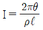
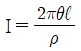
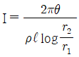
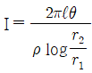
(정답률: 62%)
19. 500[W]는 약 몇 [cal/s]인가?
- 71
- 86
- 98
- 120
(정답률: 75%)
20. 200[W]의 전구를 우유색 구형 글로브에 넣었을 경우 우유색 유리 반사율을 30[%], 투과율을 60[%]라고 할 때 글로브의 효율[%]은 얼마인가?
- 75
- 85.7
- 116.7
- 133.3
(정답률: 70%)
2과목: 전력공학
21. 초고압 장거리 송전선로에 접속되는 1차 변전소에 병렬리액터를 설치하는 목적은?
- 송전용량의 증가
- 페란티효과의 방지
- 과도안정도의 증대
- 전력손실의 경감
(정답률: 32%)
22. 단상2선식과 3상3선식에서 선간전압, 송전거리, 수전전력, 역률을 같게 하고 선로손실을 동일하게 하는 경우, 3상에 필요한 전선 무게는 단상의 얼마인가?
- 1/4
- 2/4
- 3/4
- 2/3
(정답률: 36%)
23. 저수지의 이용수심이 클 때 사용하면 유리한 조압수조는?
- 단동 조압수조
- 수실 조압수조
- 소공 조압수조
- 차동 조압수조
(정답률: 31%)
24. 금속관 공사로부터 애자 사용공사로 바뀔 때 금속관 끝에 사용하는 기구가 아닌 것은?
- 링 리듀서
- 절연 부심
- 터미널 캡
- 엔트런스 캡
(정답률: 33%)
25. 송전선로에서 가장 많이 발생되는 사고는?
- 단선사고
- 단락사고
- 지락사고
- 지지물 전도사고
(정답률: 29%)
26. 부하역률 cosθ인 배전선로의 저항손실은 같은 크기의 부하전력에서 역률 1일 때의 저항손실과 비교하면 그 비는 어떻게 되는가?
- sinθ
- cosθ
- 1/cos2θ
- 1/sin2θ
(정답률: 34%)
27. 터빈발전기의 극수는 보통 몇 극인가?
- 2 또는 4
- 6 또는 8
- 10 또는 12
- 14 또는 16
(정답률: 34%)
28. 500 kVA 변압기 3대를 △-△결선 운전하는 변전소에서 부하의 증가로 500 kVA 변압기 1대를 증설하여 2뱅크로 하였다. 최대 몇 kVA의 부하에 응할 수 있는가?
- 500√3
- 1000√3
- 2000√3
- 3000√3
(정답률: 31%)
29. 345 kV 초고압 송전선로에 사용되는 현수애자는 1연 현수인 경우 대략 몇 개 정도 사용되는가?
- 6~8
- 12~14
- 18~20
- 28~38
(정답률: 37%)
30. 2회선 송전선로가 있다. 사정에 따라 그 중 1회선을 정지하였다고 하면 이 송전선로의 일반 회로정수(4단자 정수) 중 B의 크기는?
- 변화 없다.
- 1/2로 된다.
- 2배로 된다.
- 4배로 된다.
(정답률: 18%)
31. 전력용 퓨즈의 장점은 옳지 않은 것은?
- 소형으로 큰 차단용량을 갖는다.
- 밀폐형 퓨즈는 차단시에 소음이 없다.
- 가격이 싸고 유지 보수가 간단하다.
- 과도 전류에 의해 쉽게 용단되지 않는다.
(정답률: 43%)
32. 3상 변압기의 임피던스가 Z[Ω]이고 선간전압이 V[kV], 정격용량이 P[kVA]일 때 이 변압기의 %임피던스는?
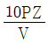
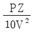
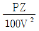
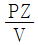
(정답률: 38%)
33. 154 kV 2회선 송전 선로의 길이가 154 km이다. 송전용량 계수법에 의하면 송전용량은 약 몇 MW인가? (단, 154 kV의 송전용량 계수는 1300 이다.)
- 400
- 350
- 300
- 250
(정답률: 25%)
34. 그림과 같은 선로에서 점 F 에서의 1선 지락이 발생한 경우 영상임피던스는?
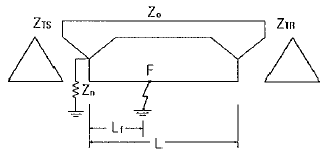
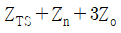
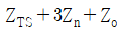
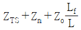
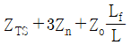
(정답률: 29%)
35. 그림과 같은 수전단 전압 3.3kV, 역률 0.85(뒤짐)인 부하 300 kW에 공급하는 선로가 있다. 이때의 송전단 전압은 약 몇 V 인가?
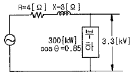
- 2930 V
- 3230 V
- 3530 V
- 3830 V
(정답률: 27%)
36. 역률 0.8인 부하 480 kW를 공급하는 변전소에 전력용 콘덴서 220 kVA를 설치하면 역률은 몇 % 로 개선할 수 있는가?
- 92%
- 94%
- 96%
- 99%
(정답률: 35%)
37. 전력선 반손보호계전방식이 아닌 것은?
- 영상전류 비교방식
- 고속도 거리계전기와 조합하는 방식
- 방향 비교방식
- 위상 비교방식
(정답률: 18%)
38. 복도체 또는 다도체에 대한 설명으로 옳지 않은 것은?
- 복도체는 3상 송전선의 1상의 전선을 2본으로 분할한 것이다.
- 2본 이상으로 분할된 도체를 일반적으로 다도체라고 한다.
- 복도체 또는 다도체를 사용하는 주목적은 코로나 방지에 있다.
- 복도체의 선로정수는 같은 단면적의 단도체 선로에 비교할 때 변함이 없다.
(정답률: 36%)
39. 부하전력 W[kW], 전압 V[V], 선로의 왕복선 2ℓ[m], 고유저항 ρ[Ω·mm2/m], 역률 100%인 단상2선식 선로에서 선로손실을 P[W]라 하면 전선의 단면적은 몇 mm2 인가?
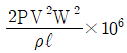
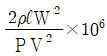
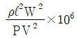
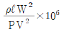
(정답률: 31%)
40. 어떤 콘덴서 3개를 선간전압 3300V, 주파수 60Hz의 선로에 △로 접속하여 60 kVA가 되도록 하려면 콘덴서 1개의 정전용량은?
- 약 4.87 ㎌
- 약 9.74 ㎌
- 약 14.61 ㎌
- 약 19.48 ㎌
(정답률: 20%)
3과목: 전기기기
41. 유도전동기의 토크 속도 곡선이 비례추이 한다는 것은 그 곡선이 무엇에 비례해서 이동하는 것을 말하는가?
- 슬립
- 회전수
- 공급전압
- 2차 합성저항
(정답률: 24%)
42. 직류 분권전동기를 무부하로 운전 중 계자 회로가 단선이 되었다. 이 때 전동기의 속도는?
- 즉시 정진한다.
- 속도가 가속되어 위험하다.
- 속도가 약간 낮아진다.
- 역방향으로 회전한다.
(정답률: 34%)
43. 동기기의 전기자 권선법 중 단절권과 분포권을 사용하는 이유 중 가장 중요한 목적은?
- 높은 전압을 얻기 위해서
- 일정한 주파수를 얻기 위해서
- 좋은 파형을 얻기 위해서
- 효율을 좋게 하기 위해서
(정답률: 37%)
44. 보극과 보상권선이 없는 직류발전기에서 부하가 증가하면 전기적 중성축은 어떻게 되는가? (단, 전기적 중성축과 기하학적 중성축의 사이각을 θ라고 한다.)
- 전기적 중성축은 직류발전기의 회전방향으로 이동하며 θ는 증가
- 전기적 중성축은 직류발전기의 회전방향으로 이동하며 θ는 감소
- 전기적 중성축은 직류발전기의 회전방향과 반대로 이동하며 θ는 증가
- 전기적 중성축은 직류발전기의 회전방향과 반대로 이동하며 θ는 감소
(정답률: 25%)
45. 4극 전기자 권선이 단중 중권인 직류발전기의 전기자 전류가 20[A]이면 각 전기자 권선의 병렬회로에 흐르는 전류[A]는?
- 10
- 8
- 5
- 2
(정답률: 42%)
46. 수은 정류기의 이상 현상 또는 전기적 고장이 아닌 것은?
- 역호
- 이상전압
- 점호
- 통호
(정답률: 21%)
47. 다음 전자석의 그림 중에서 전류의 방향이 화살표와 같을 때 위쪽부분이 N극인 것은?
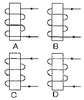
- A, B
- B, C
- A, D
- B, D
(정답률: 45%)
48. 동기 발전기에서 단락비 KS 의 범위가 옳은 것은?
- 수차 발전기는 0.9 ~ 1.2 정도이다.
- 수차 발전기는 0.5 ~ 1.5 정도이다.
- 터빈 발전기는 0.9 ~ 1.2 정도이다.
- 터빈 발전기는 0.5 ~ 1.5 정도이다.
(정답률: 24%)
49. 변압기의 임피던스 전압이란?
- 단락 전류에 의한 변압기 내부 전압 강하
- 정격 전류시 2차측 단자전압
- 무부하 전류에 의한 2차측 단자전압
- 정격 전류에 의한 변압기 내부 전압 강하
(정답률: 26%)
50. 변압기의 부하가 증가할 때의 현상이다. 옳지 않은 것은?
- 동손의 증가
- 철손의 증가
- 누설자속 증가
- 온도상승
(정답률: 33%)
51. 단상 유도전압조정기에서 단락권선의 직접적인 역할은?
- 누설 리액턴스로 인한 전압강하방지
- 역률보상
- 용량증대
- 고조파방지
(정답률: 38%)
52. 3상 유도전동기의 원선도를 그리는데 필요하지 않은 시험은?
- 슬립측정시험
- 구속시험
- 무부하시험
- 저항측정시험
(정답률: 46%)
53. 전부하시 슬립 5[%], 회전자 1상의 저항 0.⑤[Ω]인 3상 권선형 유도전동기를 전부하 토크로 가동시키려면 회전자에 몇 [Ω]의 저항을 삽입하면 되는가?
- 0.85
- 0.90
- 0.95
- 1.⑤
(정답률: 28%)
54. 그림은 동기전동기의 V곡선(위상 특성곡선)이다. 부하가 가장 큰 경우는?
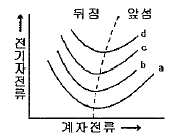
- a
- b
- c
- d
(정답률: 35%)
55. 그림은 일반적인 반파 정류이다. 변압기 2차 전압의 실효값을 E[V]라 할 때 직류 전류 평균값은? (단, 정류기의 전압강하는 무시한다.)
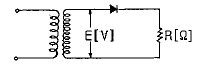
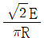
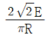
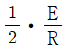
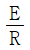
(정답률: 25%)
56. 4극, 7.5[kW], 200[V], 60[Hz]의 3상 유도전동기가 있다. 전부하에서의 2차 입력이 7950[W] 일 경우 슬립은? (단, 여기서 기계손은 130[W]이다.)
- 0.04
- 0.⑤
- 0.06
- 0.07
(정답률: 27%)
57. 동기 발전기에서 극수 4, 1극의 자속수 0.062[Wb], 회전속도 1800[rpm], 코일 권수가 100 일 때 코일의 유기기전력의 실효치[V]는 약 얼마인가? (단, 권선계수는 1.0이라 한다.)
- 526
- 1488
- 1652
- 2336
(정답률: 29%)
58. 어떤 주상 변압기가 4/5 부하일 때 최대효율이 된다고 한다. 전부하에 있어서의 철손과 동손의 비 Po/Pi는 약 얼마인가?
- 0.64
- 1.56
- 1.64
- 2.56
(정답률: 29%)
59. 5[kVA]의 단상변압기의 %저항강하가 2.4[%], %리액턴스 강하가 1.6[%]이다. %임피던스강하[%]는?
- 약 3.2
- 약 2.9
- 약 2.5
- 약 2.2
(정답률: 26%)
60. 다음 중 직류기의 철손에 해당하는 것은?
- 히스테리시스손
- 풍손
- 표류 부하손
- 동손
(정답률: 29%)
4과목: 회로이론
61. 라플라스 함수
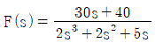
일 때, t=∞에서의 값은?- 0
- 6
- 8
- 15
(정답률: 32%)
62.
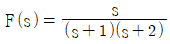
일 때 f(t)를 구하면?- 1-2e-2t+e-t
- e-2t-2e-t
- 2e-2t+e-t
- 2e-2t-e-t
(정답률: 24%)
63. Z=3+j4 Ω이 △로 접속된 회로에서 100V의 대칭 3상 선간전압을 가했을 때 선전류(A)는?
- 20A
- 14.14A
- 40A
- 34.64A
(정답률: 28%)
64. 100 kVA 단상변압기 3대로 △결선하여 3상 전원을 공급하던 중 1대의 고장으로 V결선 하였다면 출력은 약 몇 kVA 인가?
- 100
- 173
- 245
- 300
(정답률: 41%)
65. 대칭 3상 전압을 그림과 같은 평형 부하에 가할 때 부하의 역률은 약 얼마인가? (단, R = 12Ω, 1/ωC = 4Ω 이다.)
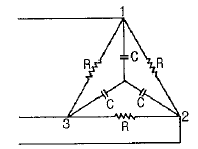
- 0.6
- 0.7
- 0.8
- 0.9
(정답률: 23%)
66. 그림과 같이 저항 R=100Ω인 회로에 200V의 교류 전압을 가했을 때, 저항 R에서 소비되는 전력은 얼마인가?
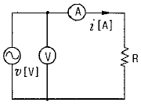
- 200 W
- 400 W
- 600 W
- 800 W
(정답률: 30%)
67. 그림과 같은 회로가 공진이 되기 위한 조건을 만족하는 어드미턴스는?
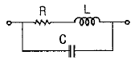
- CL/R
- CR/L
- L/CR
- LR/C
(정답률: 30%)
68. 다음 회로의 3Ω 저항 양단에 걸리는 전압 V는?
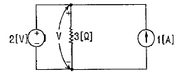
- 3 V
- -2 V
- -3 V
- 2 V
(정답률: 29%)
69. 그림과 같은 이상적인 변압기로 구성된 4단자 회로에서 4단자 정수 A와 C는 어떻게 되는가?
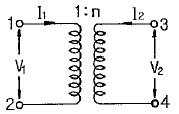
- A = 1/n, C = 0
- A = n, C = 0
- A = 0, C = 1/n
- A = 0, C = n
(정답률: 27%)
70. i1 = 5√2 sin(ωt+θ)[A]와 i2 = 3√2 sin(ωt+θ-π)[A]와의 차에 상당하는 전류의 실효값(A)은?
- 3 A
- 3√2 A
- 8 A
- 9√2 A
(정답률: 27%)
71. ø가 0에서 π까지는 i=20A, π에서 2π까지는 i=0 A인 파형을 푸리에 급수로 전개할 때는 ao는?
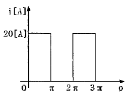
- 5
- 7.07
- 10
- 14.414
(정답률: 26%)
72. 그림과 같은 회로에 대칭 3상 전압 220 V를 가할 때 a-a′선이 단선되었다고 하면 선전류(A)는 얼마인가?
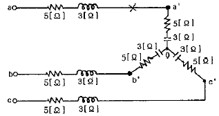
- 8A
- 11A
- 15A
- 18A
(정답률: 22%)
73. 그림과 같은 RC회로에서 입력을 ei(t)[V], 출력을 eo(t)[V]라 할 때의 전달함수는? (단, T = RC 이다.)
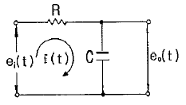
- 1 / Ts+1
- 1 / Ts+2
- 2 / Ts+3
- 1 / Ts+3
(정답률: 38%)
74. 3상 불평형 전압에서 불평형률은?
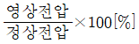
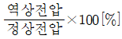
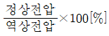
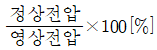
(정답률: 33%)
75. 대칭 좌표법에 관한 설명 중 잘못된 것은?
- 대칭 좌표법은 일반적인 비대칭 3상 교류회로의 계산에도 이용된다.
- 대칭 3상 전압의 영상분과 역상분은 0이고, 정상분만 남는다.
- 비대칭 3상 교류회로는 영상분, 역상분 및 정상분의 3성분으로 해석한다.
- 비대칭 3상 회로의 접지식 회로에는 영상분이 존재하지 않는다.
(정답률: 41%)
76. 그림과 같은 궤환 회로의 종합 전달함수는?
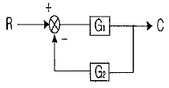
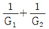
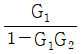
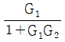
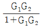
(정답률: 35%)
77. 이상 변압기에 대한 설명 중 옳은 것은?
- 단자전압의 비 V1/V2는 코일의 권수비와 같다.
- 1차측의 복소전력은 2차측 부하의 복소전력과 같다.
- 단자전류의 비 I1/I2는 권수비와 같다.
- 1차 단자에서 본 전체 임피던스는 부하 임피던스에 권수비 자승의 역수를 곱한 것과 같다.
(정답률: 25%)
78. 그림과 같은 T형 회로에 대한 서술에서 잘못된 것은?
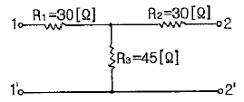
- 영상 임피던스 Z01=60Ω 이다.
- 개방 구동점 임피던스 Z11=60Ω 이다.
- 단락 전달 어드미턴스 Y12=1/80 ℧이다.
- 전달 정수
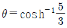
이다.
(정답률: 24%)
79. 그림과 같은 회로를 사용하여 출력파형이 입력파형을 미분한 결과가 되려면 입력파형의 주기 T와 회로의 시정수 RC 사이에 어떤 조건이 만족되어야 하는가?
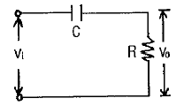
- T 《 RC
- T = RC
- T 》 RC
- T 와 RC는 무관
(정답률: 22%)
80. 1000 Hz인 정현파 교류에서 5mH인 유도리액턴스와 같은 용량리액턴스를 갖는 C[μF]의 값은?
- 5.07
- 4.07
- 3.07
- 2.07
(정답률: 30%)
5과목: 전기설비
81. 15 kV 이하인 특고압 가공전선로인 중성선의 다중접지 및 중성선의 시설 중 접지공사에서 접지한 곳 상호간의 거리는 전선로에 따라 몇 [m] 이하이어야 하는가?
- 150
- 300
- 400
- 500
(정답률: 30%)
82. 특고압 가공전선로 중 지지물로서 직선형의 철탑을 연속하여 10기 이상 사용하는 부분에는 몇 기 이하마다 내장애자장치가 되어 있는 철탑 또는 이와 동등이상의 강도를 가지는 철탑 1기를 시설하여야 하는가?
- 3
- 5
- 7
- 10
(정답률: 36%)
83. 전개된 건조한 장소에서 400V 이상의 저압 옥내배선을 할 때 특별한 경우를 제외하고는 시공할 수 없는 공사는?
- 애자사용공사
- 금속덕트공사
- 버스덕트공사
- 합성수지몰드공사
(정답률: 19%)
84. 다음 중 10 경간의 고압가공전선으로 케이블을 사용할 때 이용되는 조가용선에 대한 설명으로 옳은 것은?
- 조가용선은 아연도 강연선으로 단면적 14mm2 이상으로 하여야 하며, 제2종 접지공사를 시행 한다.
- 조가용선은 아연도 강연선으로 단면적 30mm2 이상으로 하여야 하며, 제1종 접지공사를 시행 한다.
- 조가용선은 아연도 강연선으로 단면적 22mm2 이상으로 하여야 하며, 제3종 접지공사를 시행 한다.
- 조가용선은 아연도 강연선으로 단면적 22mm2 이상으로 하여야 하며, 특별 제3종 접지공사를 시행 한다.
(정답률: 39%)
85. 고압 가공전선에 ACSR을 쓸 때의 안전율은 얼마 이상이되는 이도로 시설하여야 하는가?
- 2.0
- 2.5
- 3.0
- 3.5
(정답률: 37%)
86. 애자사용 공사에 의한 고압 옥내배선을 사람이 접촉할 우려가 없도록 시설할 경우 전선의 지지점간의 거리는 일반적으로 몇 [m] 이하인가?
- 4
- 5
- 6
- 7
(정답률: 29%)
87. 교통신호등의 시설에 관한 내용으로 적합하지 않는 것은?
- 교통신호등 회로의 사용전압은 300V 이하로 한다.
- 제어장치의 전원측에는 전용 개폐기 및 과전류 차단기를 시설한다.
- 제어장치의 금속제 외함은 제3종 접지공사를 한다.
- 교통신호등 전선은 지표상 2m 이상 시설한다.
(정답률: 42%)
88. 154/22.9kV용 변전소의 변압기에 반드시 시설하지 않아도 되는 계측장치는?
- 전압계
- 전류계
- 역률계
- 온도계
(정답률: 48%)
89. 35kV의 특고압 가공전선과 가공 약전류 전선을 동일 지지물에 시설하는 경우, 특고압 가공전선로는 몇 종 특고압 보안공사에 의하여야 하는가?
- 제1종
- 제2종
- 제3종
- 제4종
(정답률: 17%)
90. 직류식 전기철도용 전차선로의 절연 부분과 대지간의 절연저항은 사용전압에 대한 누설전류가 궤도의 연장 1km마다 가공 직류 전차선(강체조가식은 제외)에서 몇 [mA]를 넘지 아니하도록 유지하여야 하는가?
- 5
- 10
- 50
- 100
(정답률: 36%)
91. 고저압 혼촉에 의한 위험방지시설로 가공공동지선을 설치하여 시설하는 경우에 각 접지선을 가공 공동지선으로부터 분리하였을 경우의 각 접지선과 대지간의 전기저항값을 몇 [Ω] 이하로 하여야 하는가?
- 75
- 150
- 300
- 600
(정답률: 43%)
92. 변압기에 의하여 특고압 전로에 결합되는 고압전로에는 사용전압의 몇 배 이하인 전압이 가하여진 경우에 방전하는 장치를 그 변압기의 단자에 가까운 1극에 설치하여야 하는가?
- 6
- 5
- 4
- 3
(정답률: 38%)
93. 22.9kV 특고압 가공전선이 건조물과 제1차 접근 상태로 시설되는 경우 이격거리는 몇 [m] 이상인가? (단, 특고압 절연전선으로 상부조영재이며 접근형태는 위쪽인 경우이다.)
- 0.5
- 1.2
- 2.5
- 3.0
(정답률: 27%)
94. 발전소의 개폐기 또는 차단기에 사용하는 압축공기장치의 주공기 탱크에는 어떠한 최대 눈금이 있는 압력계를 시설해야 하는가?
- 사용압력의 1배 이상 2배 이하
- 사용압력의 1.15배 이상 2배 이하
- 사용압력의 1.5배 이상 3배 이하
- 사용압력의 2배 이상 3배 이하
(정답률: 33%)
95. 저압 가공전선이 교류 전차선의 위에 교차하여 시설되는 경우 저압 가공전선으로 케이블을 사용하고 단면적 몇 [mm2] 이상인 아연도강연선으로 조가하여 시설하여야 하는가?
- 22
- 38
- 55
- 100
(정답률: 25%)
96. 특고압 옥내 케이블 트레이 공사의 경우 사용전압 최대 한도는 몇 [kV] 이하이어야 하는가?
- 20
- 35
- 60
- 100
(정답률: 34%)
97. 154kV 전선로를 제1종 특고압 보안공사로 시설할 경우, 여기에 사용되는 경동연선의 단면적은 몇 [mm2] 이상이어야 하는가?
- 100
- 125
- 150
- 200
(정답률: 32%)
98. 22.9kV-Y의 특고압용 가공전선로의 지지물에 첨가한 통신선은 전력선과 몇 [cm] 이상 이격시켜야 하는가? (단, 중성선 다중 접지식의 것으로서 전로에 지락이 생긴 경우에 2초 이내에 자동적으로 이를 젠로로부터 차단하는 장치가 되어 있다고 한다.)
- 50
- 75
- 120
- 150
(정답률: 22%)
99. 가공전선로의 지지물에 시설하는 통신선 또는 이에 직접 접속하는 가공 통신선을 횡단보도교 위에 시설하는 경우에는 그 노면상 높이는 몇 [m] 이상이어야 하는가?
- 3.5
- 4
- 4.5
- 5
(정답률: 16%)
100. 케이블 트레이공사 시 저압 옥내배선의 사용전압이 400V 미만인 경우에는 금속제 트레이에 몇 종 접지공사를 하여야 하는가?(관련 규정 개정전 문제로 여기서는 기존 정답인 3번을 누르면 정답 처리됩니다. 자세한 내용은 해설을 참고하세요.)
- 제1종 접지공사
- 제2종 접지공사
- 제3종 접지공사
- 특별 제3종 접지공사
(정답률: 42%)